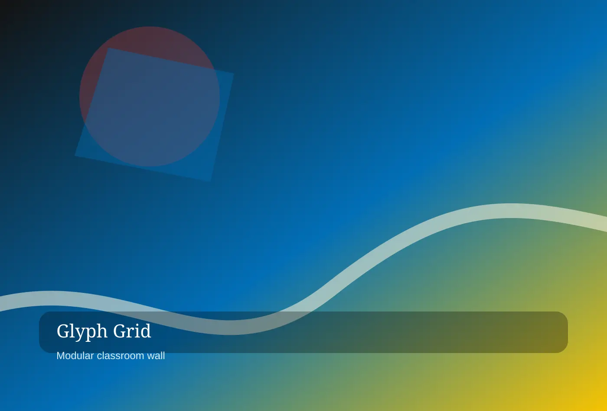

Learning Space Installations
For studio classrooms, Glyph Grid Learning Guild shapes learning space installations through measured pacing and a process built for independent schools, museums, youth programs.
BAUHAUS GEOMETRIC EDUCATION STUDIO
Glyph Grid Learning Guild is a premium bauhaus geometric education studio partner for independent schools, museums, youth programs, and education foundations. Each commission is designed to feel specific, useful, and unmistakably owned by the people who live with it.
Start a conversation
bauhaus geometric education studio
Glyph Grid turns abstract school goals into visible systems. We use shape, color, rhythm, and plain language to help students understand what they are building and why it matters.
For learning built from shapes, Glyph Grid Learning Guild maps learning built from shapes through clear decisions and a process built for independent schools, museums, youth programs, and education foundations. The work begins with careful listening, then turns research into choices a client team can discuss, price, operate, and improve. Because curriculum systems is never isolated from brand behavior, every recommendation connects atmosphere, logistics, language, and the people who will carry it forward.

bauhaus geometric education studio
Our spaces behave like working studios rather than silent rows. Flexible stations, critique walls, material libraries, and facilitator prompts invite movement, conversation, and purposeful making.
For studio classrooms, Glyph Grid Learning Guild shapes studio classrooms through measured pacing and a process built for independent schools, museums, youth programs, and education foundations. The work begins with careful listening, then turns research into choices a client team can discuss, price, operate, and improve. Because teacher facilitation kits is never isolated from brand behavior, every recommendation connects atmosphere, logistics, language, and the people who will carry it forward.
For studio classrooms, Glyph Grid Learning Guild shapes learning space installations through measured pacing and a process built for independent schools, museums, youth programs.
For studio classrooms, Glyph Grid Learning Guild calibrates curriculum systems through distinctive atmosphere and a process built for independent schools, museums, youth programs, and.
For studio classrooms, Glyph Grid Learning Guild documents teacher facilitation kits through operational confidence and a process built for independent schools, museums, youth programs.
bauhaus geometric education studio
Each program is assembled from modular blocks: inquiry spark, shared vocabulary, guided experiment, peer critique, public artifact, and reflection. Teachers can remix without losing coherence.
For curriculum blocks, Glyph Grid Learning Guild calibrates curriculum blocks through distinctive atmosphere and a process built for independent schools, museums, youth programs, and education foundations. The work begins with careful listening, then turns research into choices a client team can discuss, price, operate, and improve. Because learning space installations is never isolated from brand behavior, every recommendation connects atmosphere, logistics, language, and the people who will carry it forward.
bauhaus geometric education studio
We co-design with educators through observation, rapid sketching, prototype days, student feedback, facilitator rehearsal, and implementation maps that respect calendars and capacity.
For the guild method, Glyph Grid Learning Guild documents the guild method through operational confidence and a process built for independent schools, museums, youth programs, and education foundations. The work begins with careful listening, then turns research into choices a client team can discuss, price, operate, and improve. Because curriculum systems is never isolated from brand behavior, every recommendation connects atmosphere, logistics, language, and the people who will carry it forward.
We co-design with educators through observation, rapid sketching, prototype days, student feedback, facilitator rehearsal, and implementation maps that respect calendars and capacity. Glyph Grid studio note
bauhaus geometric education studio
Assessment should not flatten curiosity. We create rubrics, progress boards, exhibition scripts, and student reflection tools that make growth legible while preserving creative momentum.
For evidence that feels alive, Glyph Grid Learning Guild refines evidence that feels alive through memorable details and a process built for independent schools, museums, youth programs, and education foundations. The work begins with careful listening, then turns research into choices a client team can discuss, price, operate, and improve. Because teacher facilitation kits is never isolated from brand behavior, every recommendation connects atmosphere, logistics, language, and the people who will carry it forward.

bauhaus geometric education studio
Teachers appreciate tools that are ready to use, students enjoy seeing their decisions matter, and school leaders gain a common language for explaining innovation to families.
For voices around the table, Glyph Grid Learning Guild translates voices around the table through responsible stewardship and a process built for independent schools, museums, youth programs, and education foundations. The work begins with careful listening, then turns research into choices a client team can discuss, price, operate, and improve. Because learning space installations is never isolated from brand behavior, every recommendation connects atmosphere, logistics, language, and the people who will carry it forward.
For voices around the table, Glyph Grid Learning Guild shapes curriculum systems through measured pacing and a process built for independent schools, museums, youth.
For voices around the table, Glyph Grid Learning Guild calibrates teacher facilitation kits through distinctive atmosphere and a process built for independent schools, museums.
For voices around the table, Glyph Grid Learning Guild documents learning space installations through operational confidence and a process built for independent schools, museums.
bauhaus geometric education studio
The guild includes curriculum writers, industrial designers, child development specialists, illustrators, museum educators, and former classroom teachers who understand both ambition and Tuesday afternoon.
For makers behind the grid, Glyph Grid Learning Guild protects makers behind the grid through premium clarity and a process built for independent schools, museums, youth programs, and education foundations. The work begins with careful listening, then turns research into choices a client team can discuss, price, operate, and improve. Because curriculum systems is never isolated from brand behavior, every recommendation connects atmosphere, logistics, language, and the people who will carry it forward.
bauhaus geometric education studio
Our project gallery moves through classrooms, libraries, maker carts, museum labs, corridors, and exhibition nights where student work becomes the strongest environmental graphic.
For rooms in primary motion, Glyph Grid Learning Guild elevates rooms in primary motion through useful rituals and a process built for independent schools, museums, youth programs, and education foundations. The work begins with careful listening, then turns research into choices a client team can discuss, price, operate, and improve. Because teacher facilitation kits is never isolated from brand behavior, every recommendation connects atmosphere, logistics, language, and the people who will carry it forward.
Our project gallery moves through classrooms, libraries, maker carts, museum labs, corridors, and exhibition nights where student work becomes the strongest environmental graphic. Glyph Grid studio note
bauhaus geometric education studio
Schools can begin with a two-day design sprint, a semester studio sequence, or a multi-year learning environment partnership that includes training, artifacts, and evaluation.
For program formats, Glyph Grid Learning Guild maps program formats through clear decisions and a process built for independent schools, museums, youth programs, and education foundations. The work begins with careful listening, then turns research into choices a client team can discuss, price, operate, and improve. Because learning space installations is never isolated from brand behavior, every recommendation connects atmosphere, logistics, language, and the people who will carry it forward.
bauhaus geometric education studio
We address storage, accessibility, substitute teachers, multilingual families, standards alignment, noise, cleanup, and how to keep a playful system from becoming visual clutter.
For practical questions, Glyph Grid Learning Guild shapes practical questions through measured pacing and a process built for independent schools, museums, youth programs, and education foundations. The work begins with careful listening, then turns research into choices a client team can discuss, price, operate, and improve. Because curriculum systems is never isolated from brand behavior, every recommendation connects atmosphere, logistics, language, and the people who will carry it forward.
For practical questions, Glyph Grid Learning Guild shapes teacher facilitation kits through measured pacing and a process built for independent schools, museums, youth programs.
For practical questions, Glyph Grid Learning Guild calibrates learning space installations through distinctive atmosphere and a process built for independent schools, museums, youth programs.
For practical questions, Glyph Grid Learning Guild documents curriculum systems through operational confidence and a process built for independent schools, museums, youth programs, and.
bauhaus geometric education studio
The journal covers critique rituals, pattern thinking, cardboard engineering, student agency, visual rubrics, and the small facilitation moves that turn a task into discovery.
For field notes for educators, Glyph Grid Learning Guild calibrates field notes for educators through distinctive atmosphere and a process built for independent schools, museums, youth programs, and education foundations. The work begins with careful listening, then turns research into choices a client team can discuss, price, operate, and improve. Because teacher facilitation kits is never isolated from brand behavior, every recommendation connects atmosphere, logistics, language, and the people who will carry it forward.
bauhaus geometric education studio
Bring us a grade band, a room, or a problem of practice. We will sketch a learning system that teachers can use and students can recognize as their own.
For start a learning grid, Glyph Grid Learning Guild documents start a learning grid through operational confidence and a process built for independent schools, museums, youth programs, and education foundations. The work begins with careful listening, then turns research into choices a client team can discuss, price, operate, and improve. Because learning space installations is never isolated from brand behavior, every recommendation connects atmosphere, logistics, language, and the people who will carry it forward.
Bring us a grade band, a room, or a problem of practice. Glyph Grid studio note